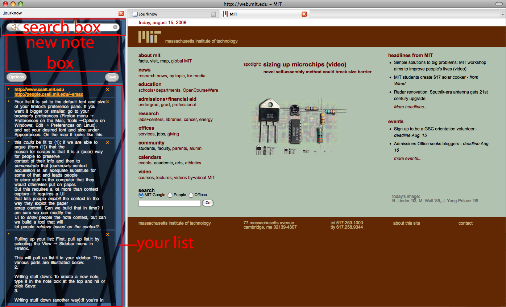

list.it frequently asked questions
-
 using it: using it: how do I get started?
We've designed list.it to be simple to use. First, follow the
instructions on the main page to install it. Then, you can use list.it in two ways.
-
Pulling up your list: First, pull up list.it by selecting
the View -> Sidebar menu in Firefox.
This will pull up list.it in your sidebar. The
various parts are illustrated below:

-
Writing stuff down: To create a new note, type it in the note box at the top and hit or click Save.
-
Writing stuff down (another way):If you're in the middle of something and don't want to shift your attention to your sidebar,
use the hot input box. Press Cmd-Shift-I (on a Mac) Ctrl-Shift-I (on Windows or Linux) to summon the input box, type your thoughts and hit enter
to send them safely to your list:

- Finding stuff: To search your notes type in your search terms in the top. The view will filter your notes to those
that contain your search term. To go back to your full list of notes, hit the x button in the search box or manually
clear your terms.

- Changing stuff:If you want to change the hotkeys work, the font size, or the way list.it looks,
see the "change it: hotkeys", "change it: background" and "change it: font size" sections in the FAQ below.
-
backing it up: setting up synchronization/backup
list.it stores your list in a database inside your Firefox profile. If you delete your firefox profile, then you will lose these notes -- you
probably don't want this to happen. We provide a free service to allow you to back up your notes on our servers ; your notes will be kept
secure and backed up on a daily basis. If something then happens to your profile, just re-install list.it, connect to our servers, and voila --
you will get your notes back.
If you have more than one computer that you use regularly (e.g., your work computer, your laptop, and your desktop at home), and want your
notes available on all of them, this very same synchronization capability will keep all your notes identical by copying them to our server,
and bringing down updates whenever you make them.
With respect to the security of your notes, we have tried to make every best practical precaution to keep bad guys (e.g., not you) from being able to
see or mess with your notes. However, we provide no warranty (bad guys are getting increasingly clever these days) -- so please do not use
our servers to store matters of national, corporate, or extremely personal security if you plan to use our backup service.
Just to remind you, our terms of service (which you must agree to to use list.it) relieve us of all liability for data that gets accidentally
lost or stolen by bad guys -- so please please make efforts to keep backups of your data.
With respect to data handling policies, we use strong-grade SSL (AES-256) to encrypt all client server communications (HTTP traffic)
and have signed our server with a certificate. Firefox will warn you if someone is trying to spoof our server; if you get one of these,
do not connect to the server.
setting it up
- Make sure you're connected to the internet
- Make sure you signed up for a list.it account (step #2).
- Pull up list.it in your sidebar and click "Options".
- In the option window that comes up, click "Support synchronization". Then, fill in your e-mail address and password that you signed up with. Then, click "Accept".
- list.it will imediately try to log into the server and fully synchronize your notes. If it wasn't able to talk to the server (e.g., if your email or password was wrong), it will ask you to try again.
-
comparing it: how does list.it compare with (stikkit/google notebook...)
You might be thinking -- I already use (Stikkit,
Google Reader, Yojimbo, Evernote...)..
why another note taking tool for the browser?
We're glad you asked. We built list.it for a couple of reasons:
- List.it is open source - Very few note taking tools are open source, making it difficult for
developers outside the particular company to extend/modify/improve them. We believe that community-developed
software leads to better software, both in terms of quality and usability.
- Back to basics - Our studies suggested that people need very few, simple, solid features in note taking tools.
So we wanted to start from scratch from the ground up.
- A base platform for adding stuff - We have a number of exciting extensions for list.it planned coming
up soon! There was no existing suitable note taking platform that would let us freely extend it to play with
new interfaces in the way we needed.
So, we wrote a new one. We want to know what you think. In particular, if there was feature X in
a particular note taking tool that you particularly love and miss in list.it, let us know? Our goal,
beyond making a cool tool is to do PIM research after all, and so we'd would love to hear about it.
-
changing it: I forgot my list.it password
No worries. Do the following:
-
- Check your email. You should have received an email from our server. Click the link contained in the e-mail, and follow the instructions to set your new passowrd.
-
verify it: What is this "noklab.com" domain?
If you noticed that list.it is connecting to "listit.nrcc.noklab.com", this is our CSAIL server machine at
NRCC, the Nokia Research Center Cambridge. Don't worry, the data you store in list.it will not be shared
with Nokia, MIT, or anyone. We will derive anonymous usage statistics of the client from your use
of it, though, and if you sign up for the user study we will analyze your notes for research purposes.
In either case, no identifying information will ever be revealed.
If you get e-mails from listit asking you to connect to some server other than listit.nrcc.noklab.com,
it may be a phishing attempt - so don't click on it! Be careful, email us
at listit at csail dot mit dot edu to make sure.
-
changing it: remapping the hotkeys
Being able to quickly find and input notes is a core design goal of list-it -- so to avoid
making you have to remove your hands from the keyboard, list.it provides hotkeys for opening up the sidebar,
the input box, and jump to search.
Depending on what other Firefox extensions you have installed though, these hot keys might conflict
with other extension hotkeys. Or with system specific global hotkeys (such as locking your screensaver!).
Therefore list.it lets you re-map its keys to others, and here's how:
setting new hotkeys
- Bring up list.it in the firefox sidebar.
- Click on Options
- Click on the text area next to the hotkey you want to change, and press the new hot key you want assigned.
- Hit accept.
- Restart firefox - your new key assignments will take effect when firefox restarts!

-
changing it: setting the font size
Your list.it is set to the default font and size of
your firefox's preference pane. If you want it bigger or smaller, go to your browser's preferences
(Firefox menu -> Preferences on the Mac; Tools ->Options on Windows; Edit -> Preferences on Linux),
and set your desired font and size under Appearances. On the mac it looks like this:
-
protecting it: are my information scraps secure?
When you use list.it's sync service, we use strong grade encryption (256-bit AES) SSL to
encrypt all communications between your client and our server. We also rely on Firefox's
certificate verification mechanism to have the client verify that our server is really who
it claims to be, so that any sort of DNS exploits (which you may have heard of recently)
can't be used against you. Our server is professionally managed and hosted at an MIT facility
-- and is completely under our control.
So we have made reasonable practical efforts to protect your notes that you back up on our
service. However, this does not mean that we can make any guarantees that the bad guys won't
outwit us. Keeping web sites and services secure is a difficult art -- so please do not put information
of national security into your notebook --! When you download list.it, our terms and conditions say
that we cannot be held liable for data loss or theft.
If, at any time you wish us to delete some/all traces of you from our servers OR need to
recover data you've accidentally deleted, email us at listit at csail dot mit dot edu.
Questions or comments? Email us at listit at csail dot mit dot edu.
-
changing it: setting up a custom background
Since personal information tools should be truly personal, list.it provides you a way to personalise
its look. You can set the background image list.it uses behind its glass skin to any image that you like.
Here's how:
Changing the background image:
- Open list.it in Firefox's sidebar
- Click Options
- Under "General", Background Image, click "Choose".
- Select an image of your choice. It should be a png, jpeg or gif.
- If you want the image resized to take up the whole vertical space,, click on "Center background image". Otherwise it will scroll and tile the image
-
fixing it: It's broken! (or something weird happened...)
Uh oh. Sorry about that -- and good job finding our bug! Please tell us about your problem. You can also
try following the below troubleshooting procedure if you\'d like.
- Send us email at listit at csail dot mit dot edu
- OR Fill out this form:
troubleshooting procedure
-
Check that Javascript is enabled: Open Options/Preferences (Firefox menu -> Preferences on the Mac;
Tools ->Options on Windows; Edit -> Preferences on Linux), select the content tab, and make sure
Enabled Javascript is clicked.
- Try opening and closing the sidebar - If the error occurred once, try opening an closing the sidebar. Did it happen again?
IF YOU ARE BRAVE ONLY: follow these instructions to get details about why list.it was acting
funny; if you send these to us, we will get back to you with how to fix it.
Enable javascript logging: Type about:config in your Go: URL bar (tell it you will be careful)
Set javascript showInConsole property to true
Then, open your error console (Tools->Error console) and look for error messages.
Click on any error messages that seem to be caused by list.it, hit Copy (Command+C on Mac, Ctrl+C on Windows and Linux) and paste it into the bug reporting dialog box below. We will double plus love you!
-
it's not here! unanswered questions, complaints,
suggestions, and stuff
|